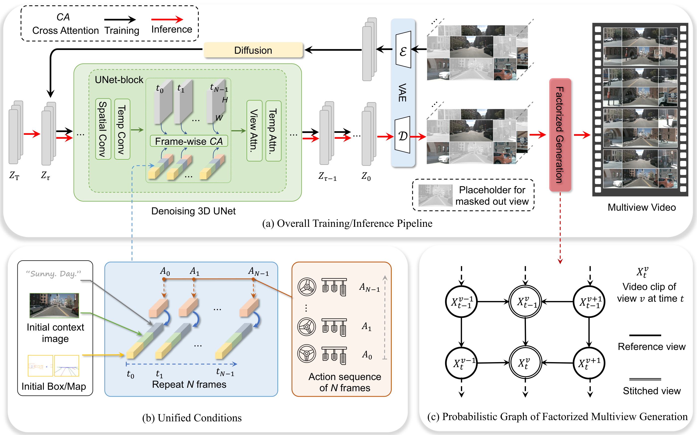
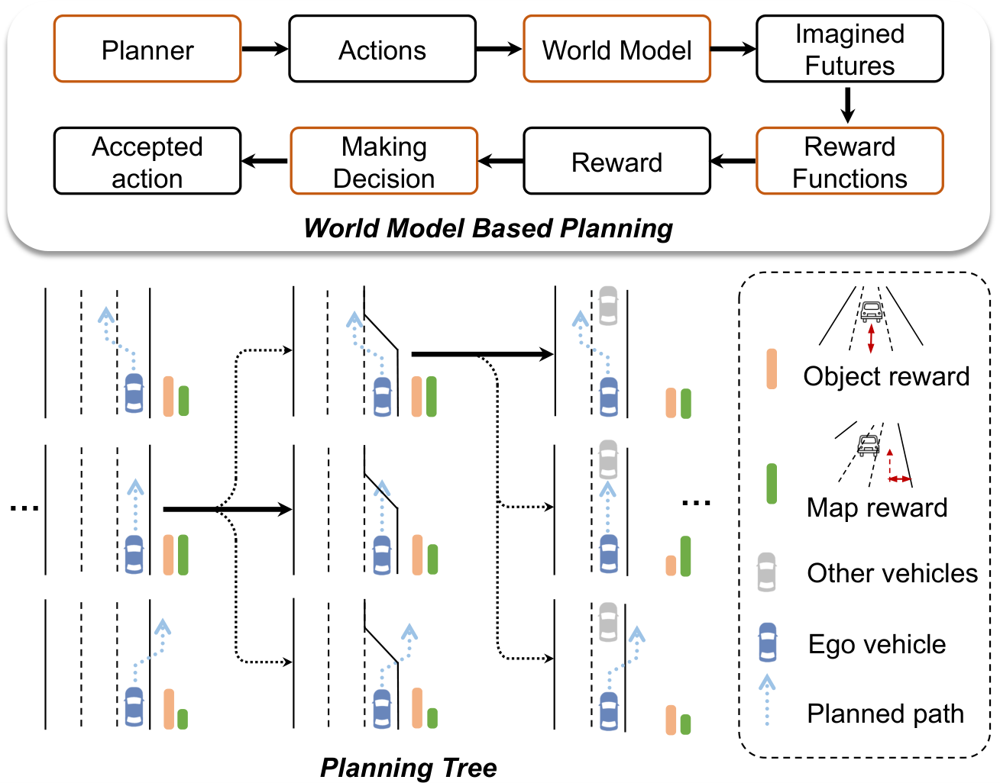
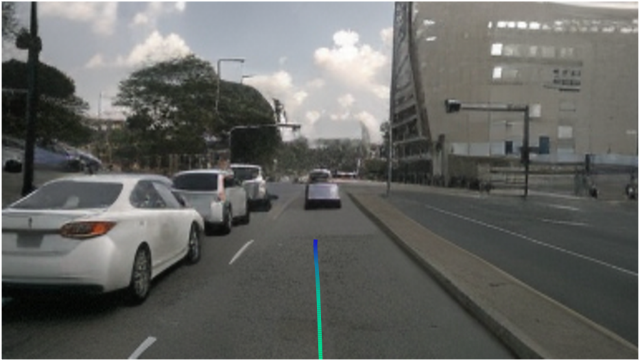
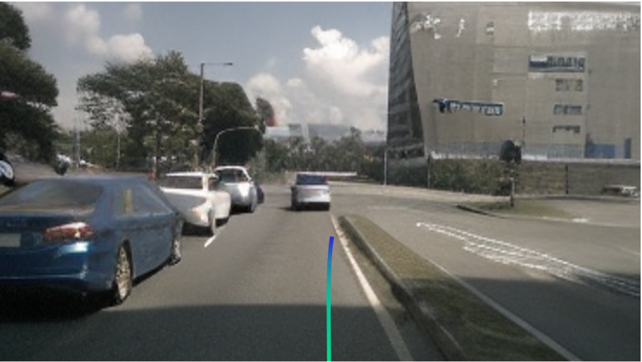
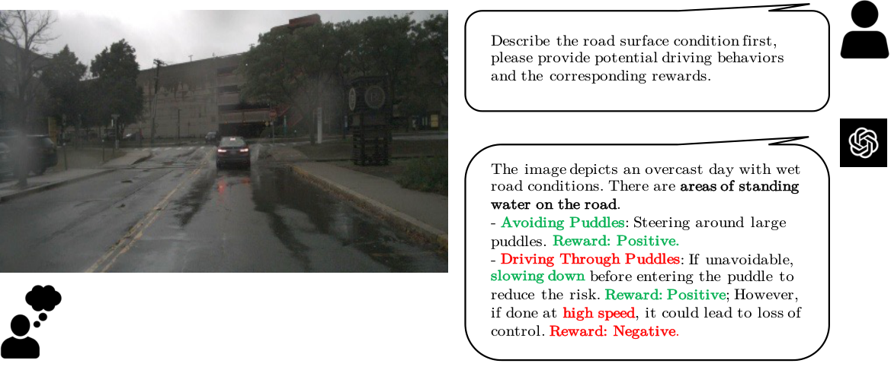

0. 页面头部：论文身份卡片
| 论文 | Drive-WM: Driving into the Future: Multiview Visual Forecasting and Planning with World Model for Autonomous Driving |
|---|---|
| 作者 | Wang, Yuqi；He, Jiawei；Fan, Lue；Li, Hongxin；Chen, Yuntao；Zhang, Zhaoxiang |
| 时间 | 2023/11/29 |
| 方向 | Multiview video world model + planning reward |
| 核心贡献 | Drive-WM 通过时空多视角 diffusion 和视角因子分解生成一致的未来多视角视频，再用不同候选驾驶动作 rollout 多个未来，并基于图像 reward 选择更安全轨迹。 |
| 模型类型 | 将多视角视频世界模型直接接入规划：对候选动作 rollout 多种未来，再依据图像奖励选择轨迹。 |
| 输入 | 多视角初始帧、HD Map/3D box/BEV 等统一条件，以及候选速度和转向动作序列。 |
| 中间表示 | 视角因子分解和时空扩散生成一致的未来多视角视频；规划树枚举动作，图像奖励评价 rollout。 |
| 输出 | 未来多视角视频与被奖励函数选中的 ego 规划。 |
| 训练目标 | 视频扩散去噪、跨视角一致性与条件控制；规划阶段不直接回归轨迹，而是比较想象未来。 |
| 代码与复现状态 | 部分：代码仓库公开，但部分权重/训练脚本发布情况需按仓库最新状态确认；很高：世界模型用于规划的代表性工作 |
1. 论文速览：用一页讲清楚价值
1.1 一句话贡献
Drive-WM 通过时空多视角 diffusion 和视角因子分解生成一致的未来多视角视频，再用不同候选驾驶动作 rollout 多个未来，并基于图像 reward 选择更安全轨迹。
1.2 论文专属关键词
multiview world model、visual forecasting、view factorization、latent video diffusion、unified condition interface、tree-based planning、image-based reward、nuScenes
1.3 技术定位
将多视角视频世界模型直接接入规划：对候选动作 rollout 多种未来，再依据图像奖励选择轨迹。
1.4 论文构建了什么
| 输入 | 多视角初始帧、HD Map/3D box/BEV 等统一条件，以及候选速度和转向动作序列。 |
|---|---|
| 编码与融合 | 视角因子分解和时空扩散生成一致的未来多视角视频；规划树枚举动作，图像奖励评价 rollout。 |
| 输出 | 未来多视角视频与被奖励函数选中的 ego 规划。 |
| 训练目标 | 视频扩散去噪、跨视角一致性与条件控制；规划阶段不直接回归轨迹，而是比较想象未来。 |
1.5 核心结论与证据链
Drive-WM 的关键突破是把世界模型从单视角视频生成推进到多视角驾驶预测，并首次明确展示其与端到端 planner 的结合。模型通过 temporal layers 和 multiview layers 在 latent diffusion 中同时建模时间和视角；再用 factorized multiview generation 让 stitched views 条件于 reference views，提高重叠区域一致性。规划阶段对 go straight/turn left/turn right 等候选动作生成多个未来，用 object reward 和 map reward 选择轨迹。论文报告单视角图像生成 FID 12.99，视频生成 FID 15.8，并在 OOD lateral shift 场景中改善 planner soundness。
核心证据来自：多视角/时序指标、反事实动作控制、规划树案例、分布外偏移案例和 GPT-4V 图像奖励示例。。证据边界是：视觉奖励可能偏好看似合理但不安全的未来；视频模型的物理错误会误导规划树。
2. 研究问题与动机：为什么需要这篇论文
2.1 核心问题与成功标准
端到端 planner 只模仿专家轨迹时，遇到分布外偏移可能继续输出不合理轨迹。人类会先“想象”不同动作后果，再选择风险更低方案。Drive-WM 选择像素/视频世界模型，是因为很多危险因素如水雾、破损路面、未矢量化障碍难以完全转成 BEV/box；同时自动驾驶感知通常依赖多视角相机，单视角世界模型不足以服务 BEV planner。
2.2 现有方法的具体不足
该论文针对的瓶颈不是笼统的“泛化不足”，而是：纯轨迹回归在轻微分布外偏移下可能失败；只生成视频又无法决策，因此论文把 world model 与 planning reward 连接。
2.3 为什么不走显而易见的替代路线
纯轨迹回归在轻微分布外偏移下可能失败；只生成视频又无法决策，因此论文把 world model 与 planning reward 连接。
3. 相关工作脉络：这篇论文从哪里来
3.1 技术家族与直接前作
Drive-WM 延续 diffusion video generation 和 world model planning。它与 GAIA-1/DriveDreamer 同属驾驶世界模型，但更强调 multiview consistency 和 planner compatibility；与 OccWorld 不同，它在像素多视角空间预测未来，而不是 3D occupancy token 空间。
3.2 本文新意属于表示、架构、训练还是评估
从技术地图看，本文的主要新意可概括为：将多视角视频世界模型直接接入规划：对候选动作 rollout 多种未来，再依据图像奖励选择轨迹。。它并非简单替换 backbone，而是围绕输入表示、中间信息流或评价方式重新定义了论文的核心问题。
4. 方法总览图：先看完整信息流
4.1 主框架图与机制

4.2 信息流一句话串联
输入：多视角初始帧、HD Map/3D box/BEV 等统一条件，以及候选速度和转向动作序列。；中间处理：视角因子分解和时空扩散生成一致的未来多视角视频；规划树枚举动作，图像奖励评价 rollout。；最终输出：未来多视角视频与被奖励函数选中的 ego 规划。；训练约束：视频扩散去噪、跨视角一致性与条件控制；规划阶段不直接回归轨迹，而是比较想象未来。
5. 方法详解：输入、表示、融合、解码、训练与部署
5.1 输入表示
多视角初始帧、HD Map/3D box/BEV 等统一条件，以及候选速度和转向动作序列。。复现时首先要确保各模态的时间同步、坐标系、可见范围与训练时一致；任何一个上游输入偏移都可能被后续大模型放大。
5.2 编码器与融合设计
视角因子分解和时空扩散生成一致的未来多视角视频；规划树枚举动作，图像奖励评价 rollout。
5.3 中间表示为何重要
中间表示决定模型保留何种几何、语义和时间信息。该论文的关键中间链路是：视角因子分解和时空扩散生成一致的未来多视角视频；规划树枚举动作，图像奖励评价 rollout。。它让最终输出能够利用这些信息，但也把上游表示误差带入规划或预测。
5.4 解码、动作生成或未来预测
未来多视角视频与被奖励函数选中的 ego 规划。
5.5 训练目标及副作用
视频扩散去噪、跨视角一致性与条件控制；规划阶段不直接回归轨迹，而是比较想象未来。。这些目标直接约束对应监督输出，却不会自动保证真实闭环安全、跨域鲁棒性或因果可解释性。
5.6 训练阶段与数据风险
模型先把图像 diffusion backbone 扩展为 temporal-multiview denoiser：空间层逐帧处理，temporal layer 建模帧间依赖，multiview layer 在视角维做 self-attention。为增强相邻视角重叠一致性，作者将视角划分为 reference views 和 stitched views，先生成 reference，再条件生成 stitched。统一条件接口把初始帧、文本、ego actions、3D boxes、BEV map、reference views 等异构条件合并。规划时用已有 planner 采样候选动作，world model rollout 多个未来，reward 结合 object collision 与 map/drivable area 选择最优。
5.7 推理与部署流程
规划质量依赖生成速度与奖励可靠性；论文展示规划原型，但真实时闭环成本仍高。
6. 原论文图解：逐图拆解证据含义
7.1 Figure 5：Overview of the proposed framework. (a) illustrates the trai
7.2 Figure 7：End-to-end planning pipeline with our world model. We displa

7.3 Figure 6：Planning with ego on centerline subfigure subfigure0.48\colu


7.4 Figure 12：Generation of multiple plausible futures based on the planni

7.5 Figure 21：GPT-4V as a reward function. GPT-4V could give more reasonab

7.6 Figure 22：Videos demonstrating the VAD planning results under normal a

7. 实验与结果：把证据链拆开
7.1 数据集、任务与划分
实验围绕该论文的技术定位组织：将多视角视频世界模型直接接入规划：对候选动作 rollout 多种未来，再依据图像奖励选择轨迹。。需要特别区分离线预测、生成质量、开环规划与真实/仿真闭环，因为它们使用不同成功标准；本论文主要证据为：多视角/时序指标、反事实动作控制、规划树案例、分布外偏移案例和 GPT-4V 图像奖励示例。
7.2 Baseline 为什么重要
论文的比较应围绕其技术定位理解：将多视角视频世界模型直接接入规划：对候选动作 rollout 多种未来，再依据图像奖励选择轨迹。。强 baseline 用来判断收益来自新增信息流、模型容量还是评估协议；仅与较弱旧方法比较不足以证明论文主张。
7.3 指标如何对应论文主张
本文实验所依赖的证据为：多视角/时序指标、反事实动作控制、规划树案例、分布外偏移案例和 GPT-4V 图像奖励示例。。离线预测误差、生成质量、规划指标或闭环分数各自只衡量部分能力，不能互相替代。
7.4 主结果与机制是否一致
实验包含单视角/多视角生成质量、可控性、视角一致性和规划。论文报告图像生成 FID 12.99、视频生成 FID 15.8，并用 keypoint matching 衡量多视角一致性。Ablation 表明 layout condition、temporal embedding、temporal/view layers 和 factorization 都影响质量与一致性。规划表显示 tree-based planner 优于随机命令和按数据分布采样命令，combined reward 优于单一 reward。证据缺口是 planner 集成仍在 open-loop/离线设定，world model 误差随 rollout 变长会积累。
8. 消融、失败案例与证据缺口
8.1 消融实验应回答什么
最关键的消融需要隔离该论文的核心信息流：多视角/时序指标、反事实动作控制、规划树案例、分布外偏移案例和 GPT-4V 图像奖励示例。。如果去掉核心模块后只在部分指标下降，需要进一步判断收益是否集中于特定场景。
8.2 失败案例与证据缺口
视觉奖励可能偏好看似合理但不安全的未来；视频模型的物理错误会误导规划树。
8.3 论文没有证明什么
现有结果不能直接推出：视觉奖励可能偏好看似合理但不安全的未来；视频模型的物理错误会误导规划树。
9. 复现要点：真正动手会遇到什么
9.1 最小可行复现路线
复现需 nuScenes 多视角视频、相机标定、3D boxes/BEV layout/action 条件。先跑 layout-based image/video generation，再跑 multiview factorization；最后接 VAD 轨迹候选和 reward selection。硬件成本较高，建议先低分辨率和短 horizon。阻塞点是多视角同步、条件编码、diffusion 训练、FVD/FID 评估和 planning reward 对齐。验收标准是多视角一致性指标与规划选择案例，而非单张生成图。
9.2 数据、模型、硬件与阻塞点
数据与接口重点：多视角初始帧、HD Map/3D box/BEV 等统一条件，以及候选速度和转向动作序列。。模型重点：视角因子分解和时空扩散生成一致的未来多视角视频；规划树枚举动作，图像奖励评价 rollout。。部署重点：规划质量依赖生成速度与奖励可靠性；论文展示规划原型，但真实时闭环成本仍高。。论文未明确披露的硬件与训练成本不在此推测。
9.3 验收标准
复现成功不应只以脚本运行结束为标准，而应至少复现论文核心趋势：多视角/时序指标、反事实动作控制、规划树案例、分布外偏移案例和 GPT-4V 图像奖励示例。；同时检查输出是否在论文声称的边界外快速退化。
10. 分析、局限与边界：作者没说完的部分
10.1 最有价值贡献
Drive-WM 最有价值的是把世界模型用于“行动前多未来评估”，而不只是生成酷炫视频。证据支持 world model 能发现某些 OOD planner 失败，但不能证明长 horizon 模拟可靠。后续可用 3D occupancy 或 NeRF/4D scene constraints 约束像素生成，并用 formal safety reward 替代 GPT-4V/图像启发式 reward。
10.2 主张—证据—充分性
| 论文主张 | 将多视角视频世界模型直接接入规划：对候选动作 rollout 多种未来，再依据图像奖励选择轨迹。 |
|---|---|
| 支撑证据 | 多视角/时序指标、反事实动作控制、规划树案例、分布外偏移案例和 GPT-4V 图像奖励示例。 |
| 充分性判断 | 对论文评测范围内的机制结论较有支持；对真实闭环、跨域或安全泛化仍不足。 |
| 原因 | 视觉奖励可能偏好看似合理但不安全的未来；视频模型的物理错误会误导规划树。 |
10.3 可行改进方向
将 occupancy/collision critic 与图像奖励联合；校准 world model 不确定性；测量固定实时预算下的规划收益。
10.4 后续实验建议
| 核心模块去除/替换 | 隔离论文主张，观察核心指标是否按预期下降 |
|---|---|
| 跨域或扰动测试 | 检查方法是否依赖训练分布和干净输入 |
| 闭环 rollout | 观察误差累积、碰撞与恢复 |
| 不确定性/安全验证 | 识别高风险预测并建立 fallback |
11. 组会问答准备
Q: 为什么多视角重要？
A: 自动驾驶 BEV 感知依赖环视一致性，单视角视频无法覆盖车辆周围完整环境。
Q: 视角因子分解解决什么？
A: 先生成不重叠 reference views，再条件生成 stitched views，提高相邻视角重叠区域一致性。
Q: 世界模型如何参与规划？
A: 对不同候选动作 rollout 未来视频，用图像 reward 评估碰撞和道路可行性，选择 reward 最大轨迹。
Q: 和 DriveDreamer 区别？
A: DriveDreamer 强调结构条件 diffusion 与动作预测；Drive-WM 强调多视角一致生成和 planner reward tree。
Q: 最大风险？
A: 生成误差会随时间累积，reward 若不可靠可能选择视觉上 plausible 但物理危险的轨迹。
12. 我的阅读笔记：转成自己的研究素材
12.1 最值得借鉴的点
这是 WM 用于 planning 的核心论文。可与 OccWorld 讨论“像素世界模型 vs occupancy 世界模型”的安全性和可验证性差异。
12.2 与同目录论文的比较钩子
可从“语言是否直接影响动作、是否显式预测未来世界、是否真实闭环、是否保留 3D 几何、是否使用 agent/tool/memory”五条轴与同目录论文比较。本文的定位为：将多视角视频世界模型直接接入规划：对候选动作 rollout 多种未来，再依据图像奖励选择轨迹。
12.3 可行动创新点
将 occupancy/collision critic 与图像奖励联合；校准 world model 不确定性；测量固定实时预算下的规划收益。
13. 附录图解与证据索引
本文使用的原始图件均来自 arXiv 源码，图注保留或准确转述。其他附录图未被机械堆入页面；只有能够解释方法、结果、消融或失败的图件才被选择。